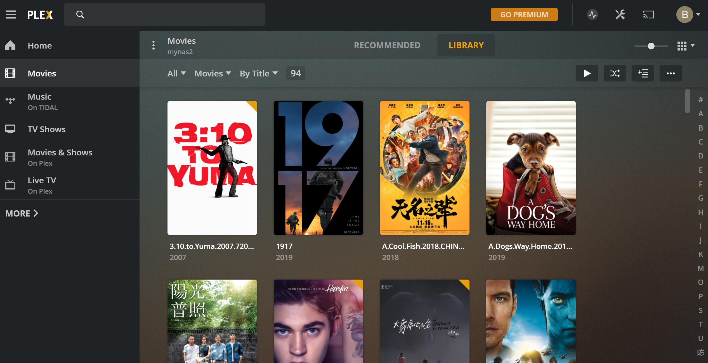
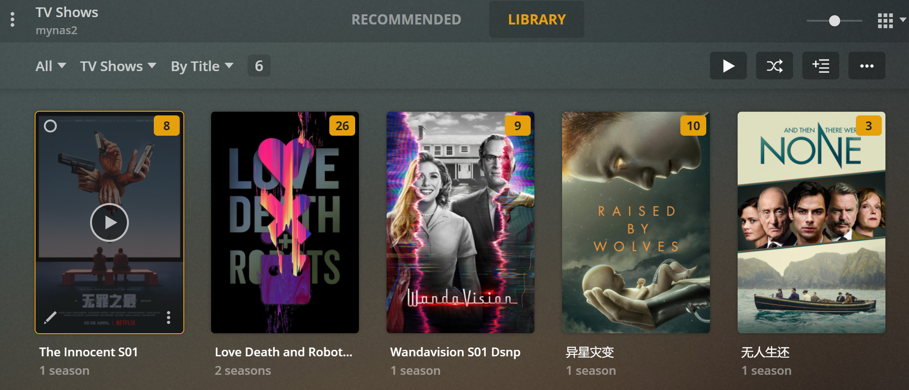
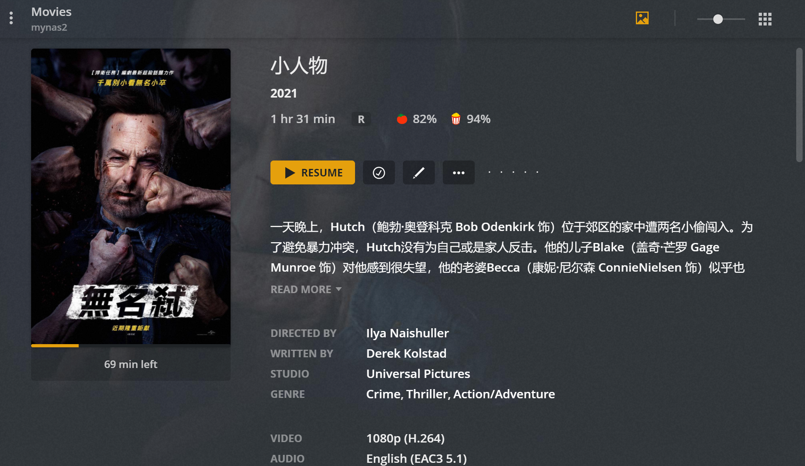
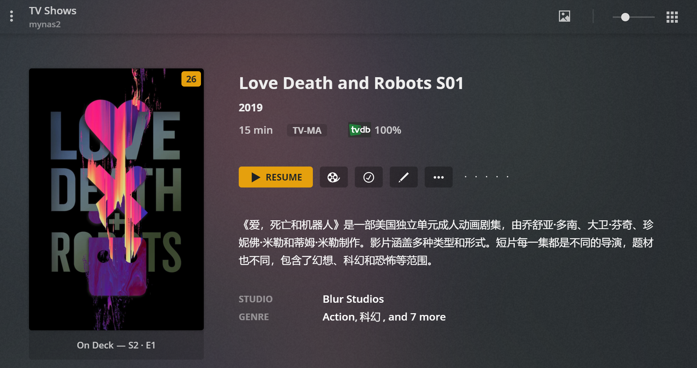
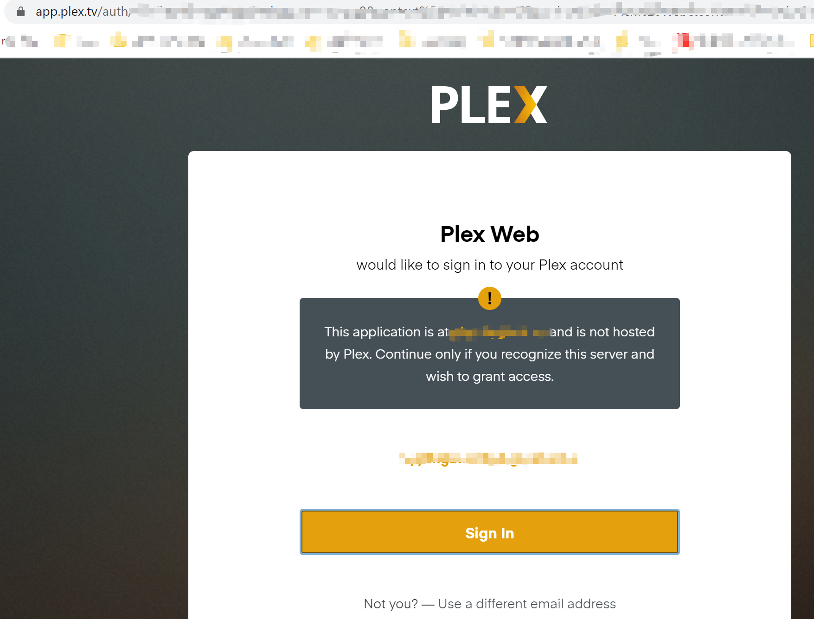

以前旧笔记本装的黑裙基本上只当下载机和文件共享中心。“斥巨资”组了黑裙之后，总想着多多利用起来。群晖上的套件一路折腾过来，踩了一些坑，也有了一些经验，此博文是为记。
过往历程
其实我的原始需求很简单：在电视上方便的观看下载的视频。在我的旧笔记本的黑裙基本已经可以满足这个需求了。
trasmission BT下载 -> NAS 共享文件夹 -> 电视NPlayer播放视频
这个方案基本不需要额外投入。直到一次黑五，购入了一个14T的硬盘，由于3.5寸盘无法直接用在笔记本上，只能外挂作为移动硬盘，用当然是可以用，但是旧笔记本USB2.0的速度在局域网动辄百兆千兆来说，简直有点侮辱了这块盘。于是有了装机的打算。
说到装机，还有一段插曲。当时公司正好有一批淘汰的机架式服务器，50块的价格感觉不要太香！抢购之后发现有两个致命缺点：1) 大，奈何家里小 2)噪音大，开机之后直接芜湖起飞。无奈出掉。又看了蜗牛星际和暴风几款矿渣主机，当时价格已经涨上来了，蜗牛星际黄鱼上基本400左右一套可以拿下，暴风主机大概贵一倍的价格。翻来覆去，最终选择了暴风二期，J3145比J1900还是强一些，而且网上对暴风二期的做工评价也不错。
于是在不想再次斥巨资的情况下，把14T的硬盘置换为了8T硬盘 + 暴风二期。（后来由于硬盘挖矿兴起，大容量硬盘价格被炒的翻倍，14T盘被我卖飞在涨价前夕，这是后话，含泪不表）
机器到手自然直接上了黑裙，这里踩了一个大坑。黑裙的版本分两个版本，一个是918版本，一个是3617版本。参考网上的教程，开始直接上918版本，因为据说918版本照片人脸识别功能做的更好。但是引导之后出现主机无法获取IP的情况，折腾两个晚上，无法解决，最终只能换3617，3617版本一切顺利。
后来才发现918版本的固件对暴风二期机子的螃蟹网卡驱动支持不是很完美，会导致机器IP获取慢的问题（需要3~5分钟才能分配到IP）。后来又发现只有918版本的黑裙才支持GPU硬件解码，当然这又是后话，暂且不表。
我的需求
群晖上的影音套件有很多，自带的Video Station，Emby， Jellifin， Plex等等。网上看了一些相关的文章，基本上比较推荐Emby和Plex。
下面是Emby和Plex两个方案试用下来的对比。
| 需求 | Emby | Plex |
|---|---|---|
| 可以外挂字幕 | 可以自动挂载字幕 | Plex集成自动搜索字幕 |
| 电视客户端，简单好用 | 有相应的Emby Android TV客户端 | 无TV客户端，但是可以作为KODI的插件，但是KODI反人类的操作界面… |
| 自动刮削，生成海报墙 | 由于墙的原因，MovieDatabase等一些电影元素据的网站需要科学上网访问，但是Emby有相应的开心版docker镜像集成了代理服务器，但是海报墙效果差强人意，优点是nfo数据和海报数据直接保存在本地文件夹 | Plex真正自动刮削，海报墙效果比Emby强不少 |
| 比较方便的外网访问 | 反向代理可解决 | 同样反向代理可解决，同时Plex登陆时使用HTTPS登录Plex账号，授权成功之后，自动跳转到自建的Plex服务，也就是说自建Plex服务开启HTTP即可，省去HTTPS申请证书等一套繁琐的操作。 |
| 最好免费 | 基本功能免费，Premium功能收费，当然有开心版本可白嫖 | Premium功能收费 |
| 转码可有可无，有最好，不是强需求 | 有，需Premium会员 | 有且不收费 |
这里多吐槽下KODI，不知道是不是电视的原因，KODI电视客户端无法安装插件，在路由器全局下科学上网下也无法work，使我不得不放弃KODI作为电视客户端。
Emby和Plex使用下来，最终我选择两个方案共存。因为Emby的电视客户端使用体验还不错，所以电视上，我使用Emby 来播放视频。在需要使用电脑的情况下，使用浏览器来访问Plex服务。话不多说，上图！




外网访问
这里记录下Plex外网访问的方法。说白了就是内网穿透，这里也有两种方法。
- 家里宽带有公网IP。这种情况只需要有一个域名即可。甚至不需要自己的域名，借助一些第三方的服务实现DDNS。比如TP路由器直接就提供了TPLINK的DDNS服务。
- 没有公网IP。需要有一台云主机，借助FRP来实现内网穿透。但是由于视频需要对VPS的带宽有一定的要求，国内VPS 带宽一般都比较贵，建议直接上国外的VPS，同样价格下带宽大且可以有“其他用途”。
家里宽带有公网IP，但是由于公网IP一般都封禁了80,443,8080端口，同时公司出口又只放通了80,443,8080端口，所以我无法直接使用方案1。无奈只能通过nginx+frp方案来实现从公司访问到家里的Plex服务。
DNS
在自己域名增加一个A记录，指向VPS IP地址，比如
media.bygeek.cn -> 123.123.123.123
VPS端
- 安装frp，可以直接使用docker image
docker pull snowdreamtech/frpc
通过volume挂载配置文件
docker run --restart=always --network host -d -v /etc/frp/frps.ini:/etc/frp/frps.ini --name frps snowdreamtech/frps
本地的frps.ini 配置示例
1 | [common] |
vhost_http_port即为frp server监听并进行http转发的端口
安装nginx
nginx的/etc/nginx/nginx.conf示例配置
1
2
3
4
5
6
7
8
9
10
11
12
13
14
15
16
17
18
19
20
21
22
23
24
25
26server {
listen 80 default_server;
listen [::]:80 default_server;
server_name media.bygeek.cn;
#root /usr/share/nginx/html;
# Load configuration files for the default server block.
include /etc/nginx/default.d/*.conf;
location / {
proxy_set_header Host $host;
proxy_set_header X-Real-IP $remote_addr;
proxy_set_header X-Forwarded-For $proxy_add_x_forwarded_for;
proxy_set_header X-Forwarded-Scheme $scheme;
proxy_redirect off;
proxy_pass http://localhost:18080;
}
error_page 404 /404.html;
location = /404.html {
}
error_page 500 502 503 504 /50x.html;
location = /50x.html {
}
}nginx会在将访问media.bygeek.cn的80端口的服务proxy到本地的18080端口http服务上去。也就是上文的frps。
注意location block里面的的proxy_set_header 字段，会将media.bygeek.cn这个host 设置为header送给frps。这个很重要，因为frps会根据custom domain来转发。
NAS端
同样安装docker 版frp，可以ssh到nas上或者直接在群晖docker 套件中搜索snowdreamtech/frpc
frpc的配置文件示例
1 | [common] |
server_addr是安装frps的服务器的地址，也即你的VPS地址
token跟frps的privilege_token一致
custom_domains即是上文DNS增加的记录
local_port是你nas上Plex服务器的端口
效果
配置完成之后，即可在外网通过80端口访问内网的Plex服务了，且登录时通过跳转Plex域名完成授权，无需担心安全问题。

经过实测，VPS的带宽可以满足自动转码下720p的外网流畅播放。
结语
由于黑裙3617版本不支持硬件解码，在需要转码的情况下CPU的暂用率很高，如果需要充分发挥暴风二期J3145 的GPU 硬解4K的能力，需要安装918固件。而这，是下一次折腾的故事了。